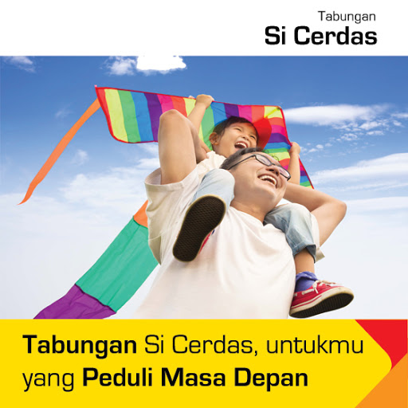

Menabung merupakan kebiasaan positif yang perlu diajarkan sejak dini pada anak-anak. Dengan diajarkan menabung, anak akan tumbuh menjadi orang yang mengerti cara mengelola uang untuk menyiapkan masadepan. Untuk itu Bank Maspion membuat jenis tabungan yang dikhususkan untuk membantu orang tua mengajarkan anaknya untuk menabung. Jenis tabungan ini diberi nama Tabungan Si Cerdas.
Tabungan Si Cerdas merupakan tabungan yang dirancang untuk menyiapkan masa depan anak dengan suku bunga yang hamper sama dengan tabungan biasa. Kelebihan dari tabungan ini adalah jumlah setoran yang ringan, yaitu 50.000 untuk setoran awal dan biaya administrasi 4.000,-/bulan. Setoran yang ringan ini lah yang membuat anak bisa ikut ambil bagian menyisihkan uangnya untuk ditabung.
| Bagi anak yang sudah bersekolah, tabungan ini juga memungkinkan nasabah untuk menggunakan fasilitas Auto Debet pembayaran uang sekolah. |  |